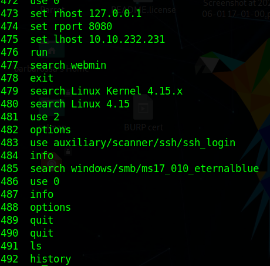

Metasploit : Introduction 2
في هذا المقال سنكمل ما تحدّثنا سابقاً حول مشروع الميتاسبلويت مع تدعيمه بالأمثلة والصور والتدريبات العملية :-
الواجهة الرئيسية التي سنستخدمها هي واجهة اوامر السطور المدعومة من الميتاسبلويت [msfconsole] ، لذا بمجرد كتابتنا للأمر msfconsole سيتم تحميل مشروع الميتاسبلويت
بعدما يتم تحميله سترى سطر الأوامر تغير إلى msf5 أو msf6 يعتمد على حسب نسخة الميتاسبلويت المحمّلة لديك . الmsfconsole تستطيع استخدامه كما تستخدم سطر الأوامر العادي ف مثلا إذا كتبت الأمر ls الذي يعرض محتوى الملف الذي تم تحميل منه الميتاسبلويت باستخدام الامر msfconsole
نستنتج هنا أن الmsfconsole يدعم أغلب أوامر اللينكس ومن ضمنها clear ، لكن هناك بعض الاستثناءات من الاوامر التي لا تعمل مثل < وهي الoutput redirect
تستطيع أيضا استخدام الامر history لمشاهدة الأوامر السابقة التي قمت بها :-

من أهم المميزات الموجودة في الmsfconsole هي الtab completion , والفكرة منها كالآتي : إذا كتبت he وضغطت على زر tab سترى تكملة أوتوماتيكية ل كلمة help
الآن لنفترض وجدنا جهاز موصّل للشبكة المحلية الخاصة بنا وهذا الجهاز يستخدم بروتوكول SMBv1 على نظام تشغيل ويندوز [بروتوكول SMB واسع الاستخدام على انظمة تشغيل ويندوز لنقل الملفات ومشاركتها حتى يستطيع إرسالها لآلات الطابعة] بعد البحث عن ثغرات موجودة في الميتاسبلويت لبروتوكول الSMBv1 باستخدام الأمر search smb وجدنا exploit جاهز لاختراق هذا البروتوكول القديم تحت اسم exploit/windows/smb/ms17_010_eternalblue .. باستخدام الامر use ووضع اسم الexploit سيمكننا من استخدامه كما في الصورة :-
بعد تحديد الexploit الذي نريد التعامل معه ، نحتاج لملئ الاعدادات لكي يعمل بالشكل الصحيح . كيف نعرف ما هي الاعدادات التي يجب علينا تعبئتها ؟
عن طريق الأمر show options

أول عمود على اليسار ب اسم name وتعني إسم الخيار الذي يجب علينا تحديده , العمود الثاني من اليسار تحت اسم current setting وهي الخيارات الموجودة تلقائيا by default او خياراتك السابقة ، العمود الثالث ب اسم required إذا كان YES ف بدون تعيين هذا الخيار لن يعمل الexploit إذا كان No حتى لو لم تملئه سيعمل الexploit لكن لجعله دقيق يفضّل استخدامه . العمود الرابع والاخير Discription وهو يصف الخيار مثل ال ...RHOSTS , RPORT , SMBDomain etc مع التنبيه ان امر الshow options سيظهر نتائج مختلفة على حسب الexploit او الauxiliray والخ..
مثال آخر على أدوات الpost-exploitation وهي بعد دخولك لجهاز الضحية تكون قد عملت session بين الميتاسبلويت وبين الضحية ف سكريبتات الpost-exploitation تعمل عند وجود هذا الsession , على سبيل المثال هناك سكريبت في الميتاسبلويت تحت اسم windows/gather/enum_domain_users عند اختياره بالأمر use post/windows/gather/enum_domain_users
وبعد اختياره ونرى ما يتطلبه هذا السكريبت نجد فقط رقم الSESSION ID وباقي الخيارات لا يشترط تحديدها ، سنتحدث لاحقاً عن كيفية تعبئة الخيارات لكل ...script , module , exploit , etc
الأمر show نستطيع استخدامه بأي سياق متبوع بنوع السكريب (module) إذا كان auxiliary , payload , exploit ,الخ... لكي يعرض الmodules المتاحة ، المثال في الاسفل يعرض الpayloads المتاحة التي نستطيع استخدامها مع ال ms17-010 eternalblue exploit
تستطيع الرجوع عن السكريبت او الmodule الذي قمت باختياره عن طريق الامر back
ولمزيد من المعلومات حول أي سكريبت قمت باختياره تستطيع فعل ذلك عن طريق الأمر info والنتائج كما تظهر في الصورة التالية :
هناك استخدام آخر للأمر info ويظهر كما في الصيغة التالية :
الأمر search وهو واحد من اكثر الاوامر فائدة في الmsfconsole ، هذا الامر سيبحث في قاعدة بيانات مشروع الميتاسبلويت للسكريبت او الmodules الذي تبحث عنه او أي اسم قريب من اسم البحث الذي كتبته
مخرجات الامر search تعطي ملخّص عن كل module موجود ف مثلا عمود الاسم يعطي المزيد من المعلومات عن الmodule ليس فقط اسمه . ونوع الmodule موجود في بداية كل اسم (auxiliary,exploit) ونوع التصنيف الخاص بذلك السكريبت (scanner,admin,windows,unix) . وتستطيع استخدام أي module عن طريق كتابة الرقم الخاص به مع الامر use , ف مثلا الmodule رقم 4 نستطيع استخدامه عن طريق الامر use 4 بدلا من use auxiliary/scanner/smb/smb_ms17_010
معلومات مهمة مكتوبة في خانة الرانك (Rank) ; الexploits مصنّفات على حسب امكانية الاعتماد عليهم وصلابتهم وامكانية فعاليتهم لنشرح بعض أنواع الRanks في ترتيب أهمية الexploit
1) الExcellentRanking :هذا الexploit لن يعطّل السيرفر ، هذه الحالة لثغرات الSQL Injection , الCMD Execution , الRFI والLFI والخ... لذا لا يوجد تلف في الذاكرة
2) الGreatRanking : هذا الexploit هدفه موجود by default و إما يكشف هدفه تلقائيا وهذا يدل على سهولة استخدامه
3) الNormalRanking : هذا الexploit تستطيع الوثوق به لكن يعتمد على نسخة واحدة من الثغرة ، ولا تستطيع كشف الهدف تلقائيا
4) الAverageRanking : هذا الexploit بشكل عام غير ثابت او صعب الاختراق
5) الLowRanking : هذا الexploit تقريبا شبه مستحيل اختراقه (او نسبة نجاح الاختراق تحت ال50%) للعديد من المنصات
في هذا المقال تكلمنا عن كثير من الامور أهمّها كيفية تشغيل واجهة اوامر مشروع الميتاسبلويت ، أهم الاوامر الموجودة في الميتاسبلويت ، كيفية اختيار module معين ، كيفية إظهار ما يتطلبه كل module , كيفية عرض معلومات باستخدام الامر info لكل module ، خيارات متنوعة للامر show , search , info , وكيف يتم ترتيب الرانك في اهمية وفعالية كل module من الExcellentRanking حتى الLowRanking